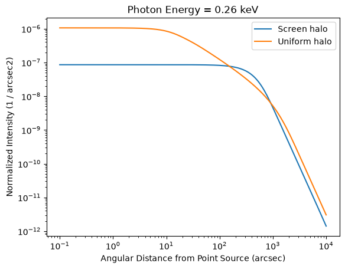
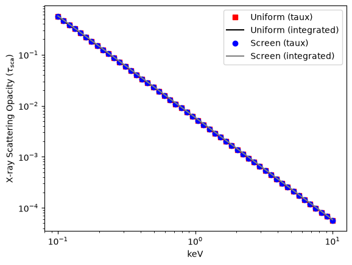
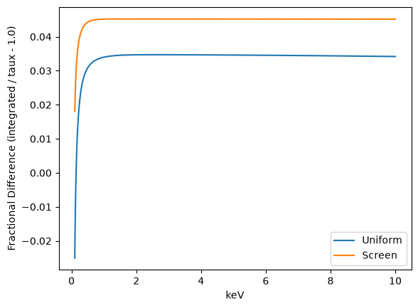
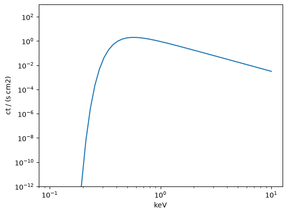
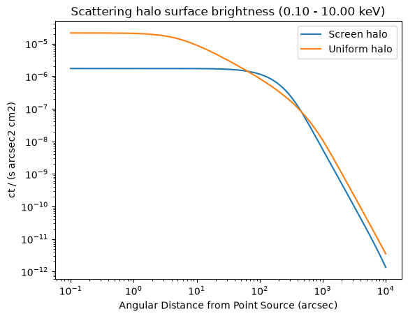
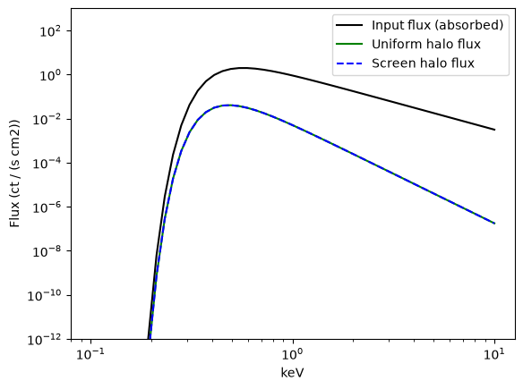
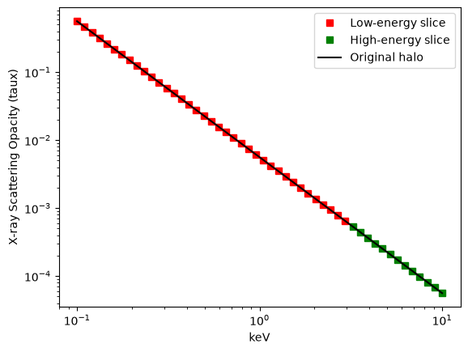
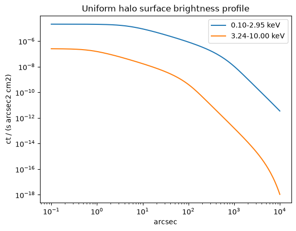

Modeling X-ray dust scattering halos¶
The xdust.halos module computes the surface brightness profile of an X-ray dust scattering halo under a variety of geometric assumptions. This functionality is provided by two subclasses of xdust.halos.Halo:
xdust.halos.UniformGalHaloassumes the scattering dust is distributed uniformly along the line of sight between the telescope and the X-ray point source.xdust.halos.ScreenGalHaloassumes the scattering dust is confined to an infinitesimally thin screen at position \(x = 1 - d/D\), where \(d\) is the distance from the telescope to the screen and \(D\) is the distance from the telescope to the X-ray point source.
See the halos module reference for the full API, including the UniformGalHaloCP15 and ScreenGalHaloCP15 shortcuts for the semi-analytic model of Corrales & Paerels (2015).
By the end of this tutorial, you will be able to:
initialize a
UniformGalHaloand aScreenGalHaloover an energy and angle gridrun a scattering halo calculation for a given
GrainPopverify a halo calculation by integrating its surface brightness profile
compute the halo intensity produced by an X-ray point-source spectrum
slice a
Haloobject by energy, the same way you would slice a numpy array
import numpy as np
import matplotlib.pyplot as plt
import astropy.units as u
import astropy.constants as c
import xdust
Setting up a scattering halo¶
To initialize a scattering halo object, we need a grid of photon energies and a grid of angular distances (the angles at which the scattering halo is visible around the point source).
n_energy, n_theta = 50, 200
energy_grid = np.logspace(-1, 1, n_energy) * u.keV
theta_grid = np.logspace(-1, 4, n_theta) * u.arcsec
uniform_halo = xdust.halos.UniformGalHalo(energy_grid, theta_grid)
screen_halo = xdust.halos.ScreenGalHalo(energy_grid, theta_grid)
To run the calculation, each halo also needs to know what kind of dust grains are doing the scattering – their size distribution and composition, stored in a xdust.GrainPop object.
Below, we use the Rayleigh-Gans-plus-Drude approximation, which treats a dust grain as a cloud of free electrons and is therefore relatively insensitive to grain composition (unlike Mie scattering). The xdust.make_MRN_RGDrude shortcut builds a standard power-law grain size distribution (Mathis, Rumpl & Nordsieck 1977) using the RG-Drude approximation.
dust_pop = xdust.make_MRN_RGDrude(md=1.e-6)
Now we run the calculate method for each halo, passing in the dust population.
For the screen halo, we choose \(x = 0.33\), meaning the dust screen sits two-thirds of the way along the line of sight between the telescope and the background X-ray point source. The %%time cell magic prints how long each calculation takes.
%%time
screen_halo.calculate(dust_pop, x=0.33)
CPU times: user 5.82 ms, sys: 8.96 ms, total: 14.8 ms
Wall time: 14.6 ms
For dust distributed uniformly along the line of sight, the calculation instead integrates the scattering profile over many positions between the telescope and the point source. The nx keyword sets how fine that integration grid is – try changing it to see how it affects both the calculation speed and the shape of the resulting profile (plotted below).
%%time
uniform_halo.calculate(dust_pop, nx=100)
CPU times: user 626 ms, sys: 77 μs, total: 626 ms
Wall time: 626 ms
Plotting the surface brightness profile¶
The results are stored in the norm_int attribute, with shape (len(energy_grid), len(theta_grid)) – the normalized intensity (surface brightness divided by flux) as a function of energy and angle. To see a single profile, pick an energy index.
Below we plot an arbitrary energy index; try other values to see how the halo profile shape changes with energy.
i = 10
plt.plot(theta_grid, screen_halo.norm_int[i, :], label='Screen halo')
plt.plot(theta_grid, uniform_halo.norm_int[i, :], label='Uniform halo')
plt.loglog()
plt.legend()
plt.title("Photon Energy = {:.2f}".format(energy_grid[i]))
plt.xlabel(r"Angular Distance from Point Source ({})".format(theta_grid.unit))
plt.ylabel(r"Normalized Intensity ({})".format(screen_halo.norm_int.unit))
Text(0, 0.5, 'Normalized Intensity (1 / arcsec2)')

Verifying the halo calculation¶
As a check, we can integrate the surface brightness profile stored in norm_int and confirm it reproduces the scattering optical depth (taux) at each energy.
# A 2D grid of theta values, matching the shape of norm_int
theta_grid_2d = np.repeat(theta_grid.reshape(1, n_theta), n_energy, axis=0)
# Integrate the surface brightness profile over solid angle: 2*pi*theta*dtheta.
# Because the angles are small, sin(theta) -> theta, and since norm_int has
# units of arcsec^-2, theta_grid_2d can stay in arcsec.
integrated_uniform = np.trapezoid(
uniform_halo.norm_int * 2.0 * np.pi * theta_grid_2d, theta_grid, axis=1)
integrated_screen = np.trapezoid(
screen_halo.norm_int * 2.0 * np.pi * theta_grid_2d, theta_grid, axis=1)
The plot below shows that integrating each normalized halo profile reproduces its taux value – as expected in the optically thin regime (\(\tau_{\rm sca} < 1\)). Note that the uniform and screen halos share the same taux values, even though their profile shapes differ.
plt.plot(energy_grid, uniform_halo.taux, 'rs', label='Uniform (taux)')
plt.plot(energy_grid, integrated_uniform, color='k', label='Uniform (integrated)')
plt.plot(energy_grid, screen_halo.taux, 'bo', label='Screen (taux)')
plt.plot(energy_grid, integrated_screen, color='gray', label='Screen (integrated)')
plt.loglog()
plt.legend()
plt.xlabel(str(energy_grid.unit))
plt.ylabel(r'X-ray Scattering Opacity ($\tau_{\rm sca}$)')
Text(0, 0.5, 'X-ray Scattering Opacity ($\\tau_{\\rm sca}$)')

We can also plot the fractional difference between the integrated profile and taux directly. A value of 0 means the integration exactly reproduces taux; in general this calculation is accurate to a few percent.
plt.plot(energy_grid, integrated_uniform / uniform_halo.taux - 1.0, label='Uniform')
plt.plot(energy_grid, integrated_screen / screen_halo.taux - 1.0, label='Screen')
plt.legend()
plt.xlabel(str(energy_grid.unit))
plt.ylabel('Fractional Difference (integrated / taux - 1.0)')
Text(0, 0.5, 'Fractional Difference (integrated / taux - 1.0)')

Computing halo intensity from a point-source spectrum¶
The Halo.calculate_intensity method computes the total scattering halo intensity, summed over the energy grid stored in Halo.lam.
Below, we construct a model spectrum with a shape similar to many Galactic X-ray binaries. calculate_intensity integrates using numpy.sum, so the input flux must be bin-integrated – each point in the spectrum represents the total counts (or energy) within an energy bin centered on the corresponding lam value, not a specific flux density. Bin-integrated flux has units like counts/s/cm\(^2\) (as opposed to a specific flux, which would have units of counts/s/cm\(^2\)/keV).
# An approximation of a typical Galactic X-ray binary spectrum
source_flux = (1.0 * np.power(energy_grid.value, -2.5) *
np.exp(-0.1 * np.power(energy_grid.value, -3.5)) *
u.Unit('ct s^-1 cm^-2'))
plt.plot(energy_grid, source_flux)
plt.loglog()
plt.xlabel(str(energy_grid.unit))
plt.ylabel(str(source_flux.unit))
plt.ylim(1.e-12, 1.e3)
(1e-12, 1000.0)

screen_halo.calculate_intensity(source_flux)
uniform_halo.calculate_intensity(source_flux)
The result is stored in each halo’s intensity attribute – the surface brightness profile summed over all energies, as a 1D array with the same length as theta_grid. Note that the units carry through automatically from the input spectrum and norm_int.
plt.plot(theta_grid, screen_halo.intensity, label='Screen halo')
plt.plot(theta_grid, uniform_halo.intensity, label='Uniform halo')
plt.loglog()
plt.legend()
plt.xlabel(r"Angular Distance from Point Source ({})".format(theta_grid.unit))
plt.ylabel(str(screen_halo.intensity.unit))
plt.title("Scattering halo surface brightness ({:.2f} - {:.2f} keV)".format(
energy_grid[0].to('keV').value, energy_grid[-1].to('keV').value))
Text(0.5, 1.0, 'Scattering halo surface brightness (0.10 - 10.00 keV)')

To get the total flux contained in the scattering halo, integrate intensity over solid angle (again, \(2\pi\theta\,d\theta\)). Because both halos share the same GrainPop and dust mass column, they integrate to the same total flux, despite having different profile shapes.
total_flux_uniform = np.trapezoid(uniform_halo.intensity * 2.0 * np.pi * theta_grid, theta_grid)
total_flux_screen = np.trapezoid(screen_halo.intensity * 2.0 * np.pi * theta_grid, theta_grid)
print("Total flux in uniform scattering halo: {:.3f}".format(total_flux_uniform))
print("Total flux in screen scattering halo: {:.3f}".format(total_flux_screen))
Total flux in uniform scattering halo: 0.305 ct / (s cm2)
Total flux in screen scattering halo: 0.309 ct / (s cm2)
After calculate_intensity has run, the fhalo attribute gives the flux spectrum of the scattering halo itself, as a function of energy.
plt.plot(energy_grid, source_flux, color='k', label='Input flux (absorbed)')
plt.plot(energy_grid, uniform_halo.fhalo, color='g', label='Uniform halo flux')
plt.plot(energy_grid, screen_halo.fhalo, color='b', ls='--', label='Screen halo flux')
plt.loglog()
plt.legend()
plt.ylim(1.e-12, 1e3)
plt.xlabel(str(energy_grid.unit))
plt.ylabel('Flux ({})'.format(uniform_halo.fhalo.unit))
Text(0, 0.5, 'Flux (ct / (s cm2))')

Indexing and slicing a Halo¶
A Halo object can be indexed or sliced much like a numpy array. Slicing returns a new Halo covering a sub-range of the original energy grid, with all of its calculated attributes (including intensity) carried over automatically.
The slice bounds must be given in the same units used to define Halo.lam – if lam was defined in keV, you cannot slice using Angstrom values.
low_energy_halo = uniform_halo[:3.0] # everything below 3 keV
high_energy_halo = uniform_halo[3.0:] # everything above 3 keV
print("Low-energy slice: {:.2f} - {:.2f} keV".format(
low_energy_halo.lam[0].value, low_energy_halo.lam[-1].value))
print("High-energy slice: {:.2f} - {:.2f} keV".format(
high_energy_halo.lam[0].value, high_energy_halo.lam[-1].value))
Low-energy slice: 0.10 - 2.95 keV
High-energy slice: 3.24 - 10.00 keV
plt.plot(low_energy_halo.lam, low_energy_halo.taux, 'rs', label='Low-energy slice')
plt.plot(high_energy_halo.lam, high_energy_halo.taux, 'gs', label='High-energy slice')
plt.plot(uniform_halo.lam, uniform_halo.taux, 'k-', label='Original halo')
plt.loglog()
plt.xlabel(str(low_energy_halo.lam.unit))
plt.ylabel('X-ray Scattering Opacity (taux)')
plt.legend()
<matplotlib.legend.Legend at 0x7fec2f3d7650>

plt.plot(low_energy_halo.theta, low_energy_halo.intensity,
label='{:.2f}-{:.2f} keV'.format(low_energy_halo.lam[0].value, low_energy_halo.lam[-1].value))
plt.plot(high_energy_halo.theta, high_energy_halo.intensity,
label='{:.2f}-{:.2f} keV'.format(high_energy_halo.lam[0].value, high_energy_halo.lam[-1].value))
plt.loglog()
plt.legend()
plt.xlabel(str(low_energy_halo.theta.unit))
plt.ylabel(str(high_energy_halo.intensity.unit))
plt.title("Uniform halo surface brightness profile")
Text(0.5, 1.0, 'Uniform halo surface brightness profile')
